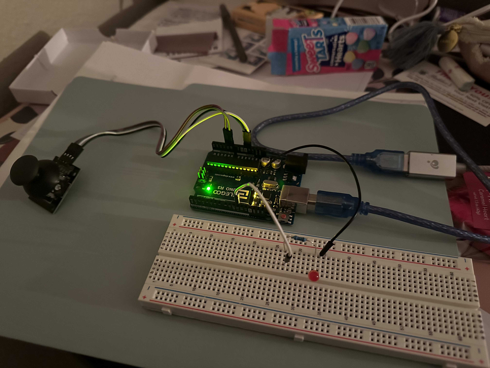
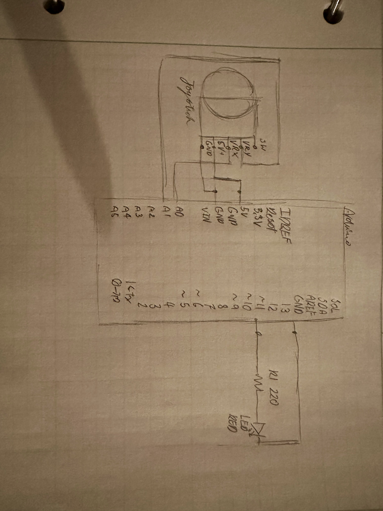
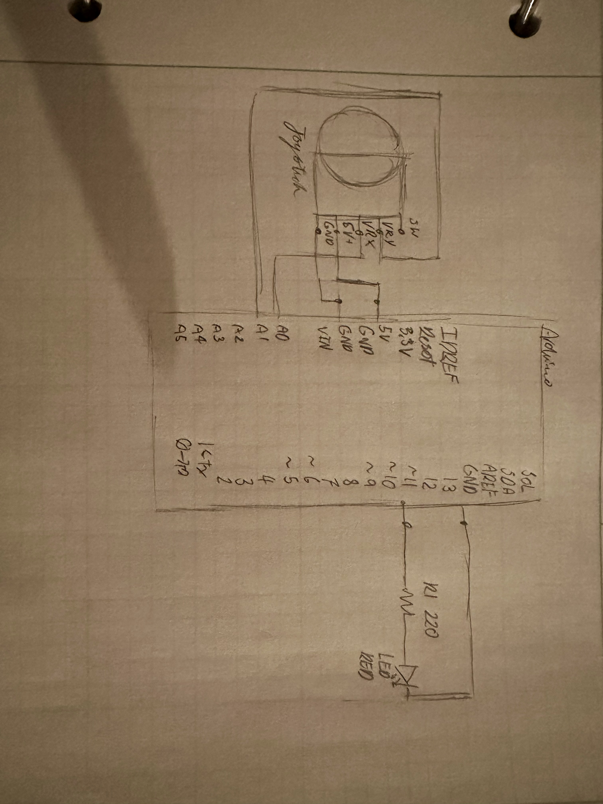

Skye's Assignment 6: Talking to the web!
Plays multiple rounds of the game hot and cold using the LED to tell the user if they are getting closer to the hidden point/h3>

 

220 ohm resistor for the LED for a current close to 20 miliamps
Arduino Code:
const int UpDown = A1; //pin recieving joystick verticle
const int LeftRight = A0; //pin recieving joystick horizontal
const int lEDPin = 11; //pin for LED
void setup() //code to run once
{
Serial.begin(9600);//starts serial at same rate it will be read
Serial.setTimeout(10); //how often serial will be read
pinMode(lEDPin, OUTPUT); // Sets the pin as output
pinMode(UpDown, INPUT); // Sets the pin as input
pinMode(LeftRight, INPUT); // Sets the pin as input
}
void loop() //code to run on repeat
{
Serial.print(analogRead(UpDown)); //prints verticle value
Serial.print(","); // prints comma to seperate values
Serial.println(analogRead(LeftRight)); //prints horizontal value
delay(50); // add some delay between reads
if(Serial.available()>0){ // listens for serial activity
int inByte = Serial.read(); //takes numeric value of activity
analogWrite(lEDPin,255-inByte); //sets LED brightness as inverse of value in browser
}
}
js Code:
const BAUD_RATE = 9600; //matches to the arduino rate
let port, connectBtn,xCor,yCor,xHidden,yHidden,upDown,rightLeft,brightness; // global variables
xCor = 0; //x starting location
yCor = 0; //y starting location
function setup() {// code to run once
setupSerial(); // allows for Serial
createCanvas(windowWidth, windowHeight); //sets size of space to be the size of the window
frameRate(50); //how often the screen updates
updateHidden(); //randomly generates the hidden point
noStroke(); // no lines on the points
textFont("system-ui", 50); // reference code from in class examples
textStyle(BOLD); // reference code from in class examples
textAlign(CENTER, CENTER); // reference code from in class examples
}
function draw() { //code to run multiple times
const portIsOpen = checkPort(); // reference code from in class examples
if (!portIsOpen) return; // reference code from in class examples
let str = port.readUntil("\n"); // reference code from in class examples
if (str.length == 0) return; // reference code from in class examples
fill("green"); // points generated will be green
clear(); //removes any previous marks
let [a1, a2] = str.trim().split(","); //assigns variables to data lines being read and seperated
upDown = int(a1); //assigns the first numerical variable to the name Updown
rightLeft = int(a2); //assigns the 2nd numerical variable to the name rightLeft
updateSeeker(); //changes the location of the point moving on the screen
checkEdges(); //makes sure values are within screen bounds
ellipse(xCor, yCor, 40, 40); // draws seeker icon
findHidden(); //checks if in range of hidden
light(); //changes LED
}
function setupSerial() { // reference code from in class examples
port = createSerial(); // reference code from in class examples
let usedPorts = usedSerialPorts(); // reference code from in class examples
if (usedPorts.length > 0) { // reference code from in class examples
port.open(usedPorts[0], BAUD_RATE); // reference code from in class examples
}
connectBtn = createButton("Connect to Arduino"); // reference code from in class examples
connectBtn.position(5, 5); // reference code from in class examples
connectBtn.mouseClicked(onConnectButtonClicked); // reference code from in class examples
}
function checkPort() { // reference code from in class examples
if (!port.opened()) { // reference code from in class examples
connectBtn.html("Connect to Arduino"); // reference code from in class examples
background("gray"); // reference code from in class examples
return false; // reference code from in class examples
} else { // reference code from in class examples
connectBtn.html("Disconnect"); // reference code from in class examples
return true; // reference code from in class examples
} // reference code from in class examples
} // reference code from in class examples
function onConnectButtonClicked() { // reference code from in class examples
if (!port.opened()) { // reference code from in class examples
port.open(BAUD_RATE); // reference code from in class examples
} else { // reference code from in class examples
port.close(); // reference code from in class examples
}
}
function updateSeeker() {
if (upDown > 520) { // if joystick is up
yCor = yCor + 10; //add 10 to location in that direction
}
if (upDown < 500) { // if joystick is down
yCor = yCor - 10;//add 10 to location in that direction
}
if (rightLeft > 520) { // if joystick is left
xCor = xCor + 10;//add 10 to location in that direction
}
if (rightLeft < 500) { // if joystick is right
xCor = xCor - 10;//add 10 to location in that direction
}
}
function checkEdges() {
if (xCor > width) { //if location is too far right
xCor = width; //resets location to edge
}
if (xCor < 0){//if location is too far left
xCor = 0;//resets location to edge
}
if (yCor > height){//if location is too far up
yCor = height;//resets location to edge
}
if (yCor < 0){//if location is too far down
yCor = 0;//resets location to edge
}
}
function findHidden() {
if ((xHidden-40) < xCor && xCor < (xHidden+40) && (yHidden-40) < yCor && yCor < (yHidden+40)) { //if seeker is within 40 of hidden
fill("red"); //changes point color to red
ellipse(xHidden, yHidden, 40, 40); //draws hidden
updateHiidden(); //calls to change location
}
}
function updateHidden() {
xHidden = random(width); //random number within width
yHidden = random(height); //random number within height
}
function light (){
brightness = constrain(xHidden-xCor,0,122)+constrain(yHidden-yCor,0,122); // Adjusts the brightness of the LED with half according to the difference in x axis and the other half y axis. Issues if point is before current location.
port.write(brightness); //givens arduino brightness value
}